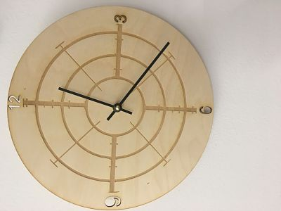

This week we got to make objects with the laser cutter. The first thing I made with the laser cutter is that I made a clock that is very similiar to a bullseye which makes it easy to tell the time. The next object I got make is a cork coaster, and I made the coaster with a University of Pittsburgh picture on it because it is the college my sister attends. The next object are three puzzle pieces out of cardboard which came out too big at first but I changed the measurments to make them more accurate. The next thing I made was a water bottle using the rotarary attachment.
